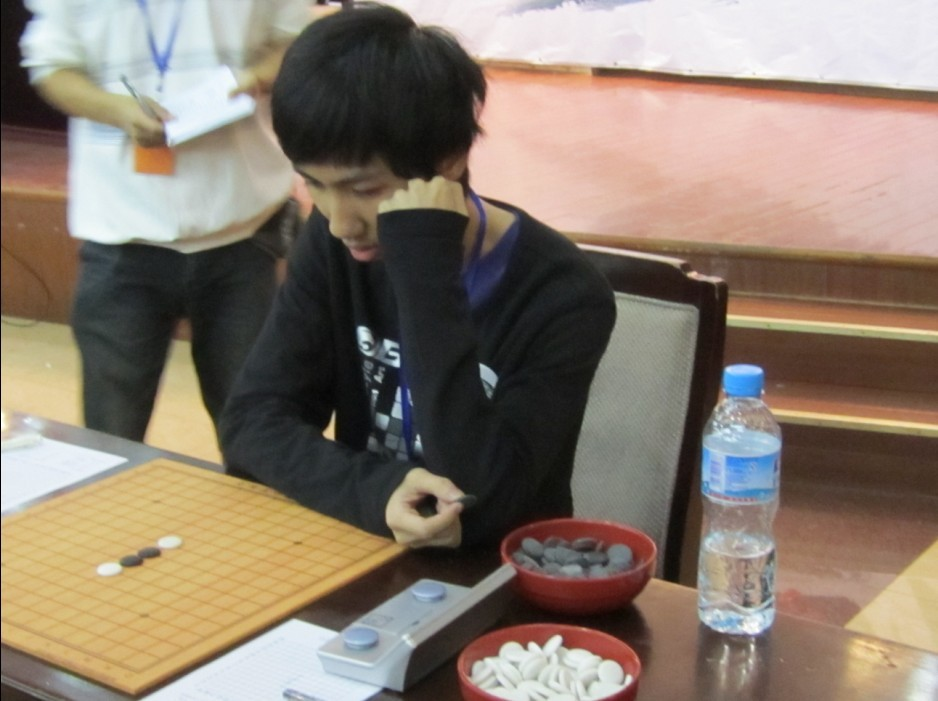
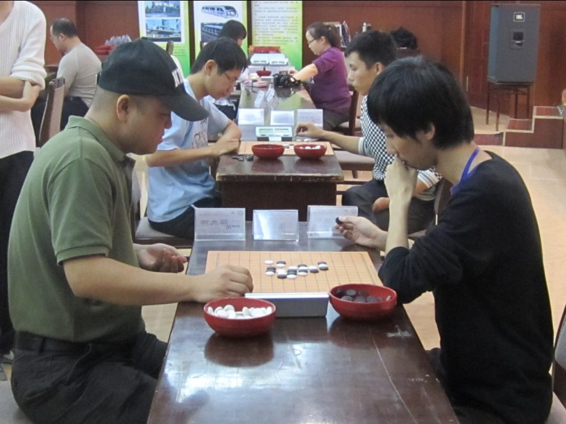
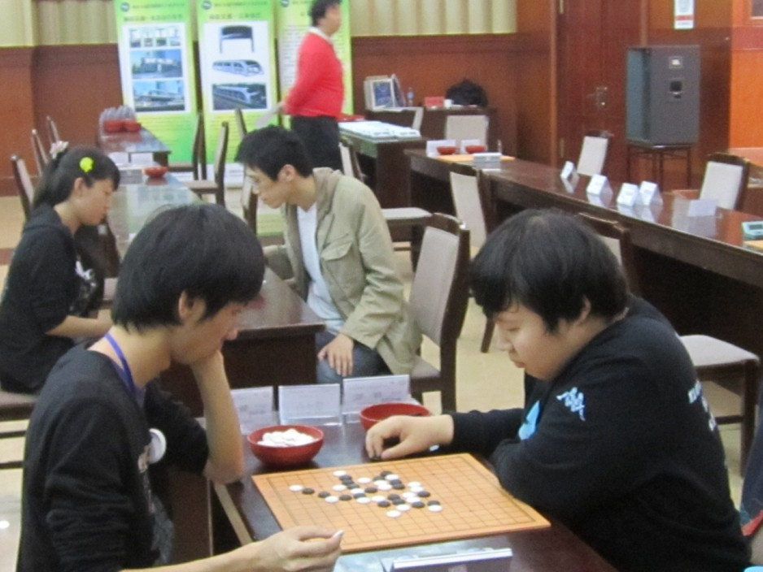

听说不写总结要罚款，炫飞管理层太黑心啦~~~不能不写了唉
赛前经过一翻折腾,很开心又有机会跟咱家炫飞的一起比赛啦。。。。。。可惜比赛的地点依旧是破破的石家庄，没有一点可以玩的地方。。。。
由于打过了几年的比赛，现在赛前再也不会象第一次时那样紧张。。。。一点竞技的感觉都没有，也就没有做过多的准备，一路在火车上和焦焦（炫飞家族的新星）有谈有笑，很快就来到石家庄。。。
来到石家庄以后看着他们摆棋才发现自己很久没有在现实中认真下过棋了，看着棋盘都有点不习惯，于是就赶紧抓着小混混陪我小练了一会。。。。。和他下棋的时候我就顺便把在火车上临时决定要开的残月下出来。。。。结果残月我拿白被混混小朋友轻轻松松杀了若干次。。。。于是在开局上又被打击了。。。比赛的时候到低该开什么呢？听天由命吧..........
当天晚上进行了分组。。。。我被分在里A组，还好，心里总算安下了一口气，A组据说只有2个冠军，但B组有5个，天啊，要是分在B组我都不知道应该不知道怎么打了，那么多的冠军，我又不是 专砍牛B的冠军 。。。
然而，在A组的我一点也没有轻松，接下来就进行了地狱赛程里面去了。。。。。
第一轮就碰上葛凌峰老师。。。。他对我开了松月，由于我一点白棋的准备都没有我就交换了，心里是想杀不了总可以下和吧，实战20的变化在QQ网络比赛出现很多，黑是没有杀的，于是我就凭着感觉下了控盘的25，27，实战的29活3我并没有想得很清楚，本来打算30反3，我再在下面攻的，结果葛老师并没有反3，30稍稍软弱，给我了交换到上面的机会，37手感觉直接进攻不是很够。。。于是就先借了37这个点。。。38稳健的防，39逼于时间原因下了感觉棋。。。幸运的是葛老师也跟了一步感觉棋，于是很轻松就VCT了。。。
第二轮对小君（于亚君），以前07年就在ORC被她虐过，心理上还是有点压力，在混混的一轮梭摆之下，我就开了个疏星，其实我都不知道我自己要下哪个变化，随便打了个5以后，她下了个我没见过6手，心里猜疑着是不是又有什么研究，结果稍微算了一下，我发现了似乎可以还原疏星一打，其实当时10手反挡还没算到怎么办，还好10手如我所愿还原疏1以后，我就觉得不会输了，开始乱做棋，实战的21我也没有去算VCT，下完了被小君挡完22以后，我发现左边不够杀了。。。。于是开始算右边连接。。。发现刚才漏掉了VCT，而且正好被22手挡住，心里一阵懊恼，没办法了，，硬着头皮继续下吧。。。。。。还好28手出现了漏洞，又轻松VCT了一把。。。。
第三轮对牛牛祈观，他开的瑞星，被我交换了，我知道他又要团12，这个团12的黑棋在网上下过几次，感觉黑白都有机会，32手我没有见过。。。。33下去以后，我发现自己误算了，没有看到白34以后右边的一套VCF，牛牛下的下了这个34以后我的心就凉啊凉啊的，无奈之下35我就硬硬补一步，36是有问题的，白棋在M9叫杀，要抢先手，但是37，39交换以后牵制了白棋右边的杀，先手就被我抢回来了，41以后我就感觉自己必胜了，但是后来复盘发现42下F5是最强，非常牛B的最强防啊。。。我还是太年轻了没看出来，实战牛牛也是压力之下防错了，没有看到43做V的简单杀，无防了。。。。
［ 清缘 于 2010-10-12 22:01:46 时花20金币送鲜花一朵］
［ 清缘 于 2010-10-12 22:01:59 时花20金币送鲜花一朵］
［ 清缘 于 2010-10-12 22:02:31 时花20金币送鲜花一朵］
［ 清缘 于 2010-10-12 22:03:27 时花20金币送鲜花一朵］
［ 清缘 于 2010-10-12 22:20:55 时花20金币送鲜花一朵］
［ 清缘 于 2010-10-12 22:21:07 时花20金币送鲜花一朵］
［ 清缘 于 2010-10-12 22:21:20 时花20金币送鲜花一朵］
引用：
原文由 清缘 发表于 2010-10-12 21:54:14 :总结一下这次比赛最大的进步就是学会了用QQ模式的思想去下棋，，我地毯不死你忽悠死你。。。。虽然漏了一堆一堆的杀。。。。
这句话是亮点。
管理层哪心黑了？一片红心嘛，疯子人瘦眼神也不好~
［ 清缘 于 2010-10-13 11:38:42 时花20金币送鲜花一朵］
［ 清缘 于 2010-10-13 11:38:58 时花20金币送鲜花一朵］
［ 清缘 于 2010-10-13 11:39:19 时花20金币送鲜花一朵］
［ 清缘 于 2010-10-13 11:43:39 时花20金币送鲜花一朵］
［ 清缘 于 2010-10-13 11:40:45 时花20金币送鲜花一朵］
［ 清缘 于 2010-10-13 12:04:47 时花20金币送鲜花一朵］
眼神好好哦。。。22忘了活3了。。。
原文不能编辑了。。。是这样的
［此帖子已被 清缘 在 2010-10-13 11:45:47 编辑过］
［ 清缘 于 2010-10-13 11:47:35 时花20金币送鲜花一朵］
［ 清缘 于 2010-10-13 11:49:55 时花20金币送鲜花一朵］
［ 清缘 于 2010-10-13 11:52:08 时花20金币送鲜花一朵］
受不鸟你啦
［ 清缘 于 2010-10-17 12:52:02 时花20金币送鲜花一朵］
［ 清缘 于 2010-10-17 12:52:24 时花20金币送鲜花一朵］
附 清缘比赛靓照N张


